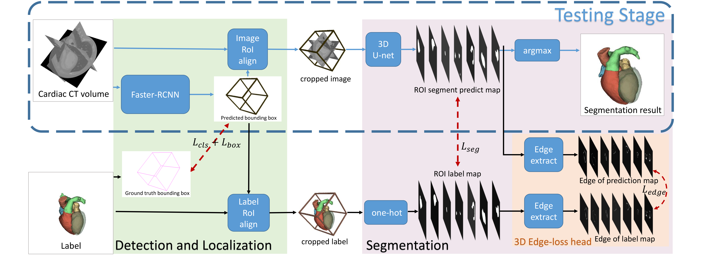

M.Sc. Computer Science
RWTH Aachen University, Aachen, Germany
Email: qiang.li@rwth-aachen.de
CV • LinkedIn • GitHub|
|
Qiang Li (利 强)
M.Sc. Computer Science RWTH Aachen University, Aachen, Germany Email: qiang.li@rwth-aachen.de CV • LinkedIn • GitHub |
About
|
Guten Tag! I am a graduate computer science student at RWTH-Aachen, working with Prof. Dr. Bastian Leibe and an IDEA Research Grant Student in Prof. Dr. Manfred Claassen Group, ETH Zürich. I got my B.S degree from the HFUT with Top-1 academic performance and received a four years national scholarship. My Bachelor was majoring in IoT and also founded the HFUT Robocup Lab. After my B.S studies, I worked as a Computer Vision Working student in Siemens AG Aachen Gas Turbin Research Center while taking the Master Informatik study at RWTH Aachen. |
News
Research Experiences
|
I am broadly interested in designing machine learning systems that can perceive the world as we human do, which I believe is the cornerstone of achieving AGI. In my exploration of this goal, I have studied and done research in medical image analysis, efficient inference, unsupervised learning and 3D vision. I have had the great fortune to participate in several interesting projects with inspiring and talented collaborators. |
Honors and Awards
Publications and Manuscripts
IF-Defense: 3D Adversarial Point Cloud Defense via Implicit Function based Restoration | |
|
Learning Efficient Binarized Object Detectors with Information Compression |
BiDet: An Efficient Binarized Object Detector | |
|
A Cascade Regression Model for Anatomical Landmark Detection |
 |
CFUN: Combining Faster R-CNN and U-net Network for Efficient Whole Heart Segmentation |
Miscellaneous
|
I have collected some tips about server environment set up solutions (e.g. CUDA driver, gcc/g++ version configuration in Ubuntu) and some good tutorials about LaTeX (written in Chinese), etc. Take a look here! |